Code examples for “Designing Sound” textbook
Chapter 10 : Using Pure Data
Hot and cold inlets
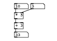
#N canvas 558 1 146 107 10; #X floatatom 36 8 5 0 0 0 - - -; #X floatatom 36 84 5 0 0 0 - - -; #X obj 36 32 * 5; #X obj 36 59 + 3; #X floatatom 79 8 5 0 0 0 - - -; #X connect 0 0 2 0; #X connect 2 0 3 0; #X connect 3 0 1 0; #X connect 4 0 2 1;
Download basics5.pd
Good and bad evaluation order
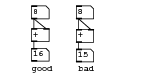
#N canvas 0 0 193 102 10; #X floatatom 40 62 0 0 0 0 - - -; #X floatatom 99 63 0 0 0 0 - - -; #X obj 40 36 +; #X floatatom 40 6 0 0 0 0 - - -; #X obj 99 37 +; #X text 38 81 good; #X text 100 82 bad; #X floatatom 99 6 0 0 0 0 - - -; #X connect 2 0 0 0; #X connect 3 0 2 1; #X connect 3 0 2 0; #X connect 4 0 1 0; #X connect 7 0 4 0; #X connect 7 0 4 1;
Download basics6.pd
Evaluation order needed here
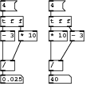
#N canvas 25 1 210 159 10; #X obj -67 48 * 10; #X obj -97 24 t f f; #X obj -97 48 - 3; #X floatatom -97 121 5 0 0 0 - - -; #X msg -97 -2 4; #X obj -17 24 t f f; #X floatatom -17 121 5 0 0 0 - - -; #X msg -17 -2 4; #X obj -17 48 * 10; #X obj 18 48 - 3; #X obj -97 97 /; #X obj -17 97 /; #X connect 0 0 10 1; #X connect 1 0 2 0; #X connect 1 1 0 0; #X connect 2 0 10 0; #X connect 4 0 1 0; #X connect 5 0 8 0; #X connect 5 1 9 0; #X connect 7 0 5 0; #X connect 8 0 11 0; #X connect 9 0 11 1; #X connect 10 0 3 0; #X connect 11 0 6 0;
Download evaluation-order.pd
Ordering messages with trigger
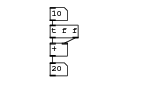
#N canvas 153 232 189 111 10; #X floatatom 65 81 0 0 0 0 - - -; #X obj 65 55 +; #X floatatom 65 8 0 0 0 0 - - -; #X obj 65 31 t f f; #X connect 1 0 0 0; #X connect 2 0 3 0; #X connect 3 0 1 0; #X connect 3 1 1 1;
Download basics7.pd
Warming a cold inlet
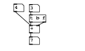
#N canvas 153 232 189 111 10; #X floatatom 65 81 0 0 0 0 - - -; #X obj 65 55 +; #X floatatom 65 8 0 0 0 0 - - -; #X obj 65 31 t b f; #X floatatom 30 7 0 0 0 0 - - -; #X connect 1 0 0 0; #X connect 2 0 3 0; #X connect 3 0 1 0; #X connect 3 1 1 1; #X connect 4 0 1 0;
Download basics8.pd
Message arrival order
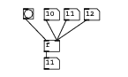
#N canvas 153 232 189 111 10; #X floatatom 65 81 0 0 0 0 - - -; #X floatatom 65 8 0 0 0 0 - - -; #X obj 65 55 f; #X floatatom 95 8 0 0 0 0 - - -; #X floatatom 125 8 0 0 0 0 - - -; #X obj 34 8 bng 15 250 50 0 empty empty empty 0 -6 0 8 -262144 -1 -1 ; #X connect 1 0 2 1; #X connect 2 0 0 0; #X connect 3 0 2 1; #X connect 4 0 2 1; #X connect 5 0 2 0;
Download basics9.pd
Starting and stopping a metronome
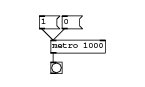
#N canvas 153 232 189 111 10; #X msg 51 19 1; #X msg 81 19 0; #X obj 66 51 metro 1000; #X obj 66 80 bng 15 250 50 0 empty empty empty 0 -6 0 8 -262144 -1 -1; #X connect 0 0 2 0; #X connect 1 0 2 0; #X connect 2 0 3 0;
Download basics10.pd
A counter timebase
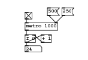
#N canvas 198 254 191 131 10; #X obj 54 43 metro 1000; #X obj 54 20 tgl 15 0 empty empty empty 0 -6 0 8 -262144 -1 -1 0 1 ; #X msg 103 10 500; #X msg 135 10 250; #X obj 54 70 f 0; #X obj 89 70 + 1; #X floatatom 54 94 5 0 0 0 - - -; #X connect 0 0 4 0; #X connect 1 0 0 0; #X connect 2 0 0 1; #X connect 3 0 0 1; #X connect 4 0 5 0; #X connect 4 0 6 0; #X connect 5 0 4 1;
Download basics11.pd
Time related objects
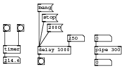
#N canvas 207 254 271 159 10; #X msg 80 -45 bang; #X obj 80 48 delay 1000; #X msg 90 -23 stop; #X msg 101 -1 2000; #X obj 80 73 bng 15 250 50 0 empty empty empty 0 -6 0 8 -262144 -1 -1; #X obj 5 46 timer; #X floatatom 5 71 5 0 0 0 - - -; #X obj 5 0 bng 15 250 50 0 empty empty empty 0 -6 0 8 -262144 -1 -1 ; #X obj 35 0 bng 15 250 50 0 empty empty empty 0 -6 0 8 -262144 -1 -1 ; #X obj 204 48 pipe 300; #X floatatom 204 23 5 0 0 0 - - -; #X floatatom 204 76 5 0 0 0 - - -; #X floatatom 145 23 5 0 0 0 - - -; #X connect 0 0 1 0; #X connect 1 0 4 0; #X connect 2 0 1 0; #X connect 3 0 1 0; #X connect 5 0 6 0; #X connect 7 0 5 0; #X connect 8 0 5 1; #X connect 9 0 11 0; #X connect 10 0 9 0; #X connect 12 0 1 1;
Download basics12.pd
A simple sequence
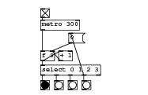
#N canvas 207 254 271 159 10; #X obj 66 77 bng 15 250 50 0 empty empty empty 0 -6 0 8 -262144 -1 -1; #X obj 89 77 bng 15 250 50 0 empty empty empty 0 -6 0 8 -262144 -1 -1; #X obj 112 77 bng 15 250 50 0 empty empty empty 0 -6 0 8 -262144 -1 -1; #X obj 135 77 bng 15 250 50 0 empty empty empty 0 -6 0 8 -262144 -1 -1; #X obj 66 27 f 0; #X obj 96 27 + 1; #X msg 113 -3 0; #X obj 66 -44 tgl 15 0 empty empty empty 0 -6 0 8 -262144 -1 -1 1 1 ; #X obj 66 51 select 0 1 2 3; #X obj 66 -25 metro 300; #X connect 4 0 5 0; #X connect 4 0 8 0; #X connect 5 0 4 1; #X connect 6 0 4 1; #X connect 7 0 9 0; #X connect 8 0 0 0; #X connect 8 1 1 0; #X connect 8 2 2 0; #X connect 8 3 3 0; #X connect 8 3 6 0; #X connect 9 0 4 0;
Download basics13.pd
Routing
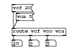
#N canvas 51 92 180 119 10; #X obj 26 43 route vcf vco vca; #X floatatom 26 70 3 0 0 0 - - -; #X floatatom 64 70 3 0 0 0 - - -; #X floatatom 102 70 3 0 0 0 - - -; #X msg 26 -11 vcf 20; #X msg 35 9 vca 5; #X connect 0 0 1 0; #X connect 0 1 2 0; #X connect 0 2 3 0; #X connect 4 0 0 0; #X connect 5 0 0 0;
Download basics14.pd
Swap
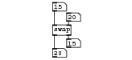
#N canvas 135 174 214 95 10; #X floatatom 85 2 3 0 0 0 - - -; #X obj 85 39 swap; #X floatatom 108 19 3 0 0 0 - - -; #X floatatom 85 78 3 0 0 0 - - -; #X floatatom 108 62 3 0 0 0 - - -; #X connect 0 0 1 0; #X connect 1 0 3 0; #X connect 1 1 4 0; #X connect 2 0 1 1;
Download basics23.pd
Change
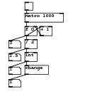
#N canvas 135 174 155 172 10; #X obj 44 0 tgl 15 0 empty empty empty 0 -6 0 8 -262144 -1 -1 0 1; #X obj 44 45 f 0; #X obj 72 45 + 1; #X obj 44 69 / 2; #X obj 44 93 int; #X floatatom 14 71 3 0 0 0 - - -; #X floatatom 14 95 3 0 0 0 - - -; #X obj 44 117 change; #X floatatom 14 120 3 0 0 0 - - -; #X floatatom 14 143 3 0 0 0 - - -; #X obj 44 20 metro 1000; #X connect 0 0 10 0; #X connect 1 0 2 0; #X connect 1 0 3 0; #X connect 1 0 5 0; #X connect 2 0 1 1; #X connect 3 0 4 0; #X connect 3 0 6 0; #X connect 4 0 7 0; #X connect 4 0 8 0; #X connect 7 0 9 0; #X connect 10 0 1 0;
Download basics24.pd
Message send
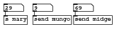
#N canvas 207 254 237 52 10; #X obj 59 28 send mungo; #X obj 135 28 send midge; #X floatatom 5 6 5 0 0 0 - - -; #X floatatom 59 6 5 0 0 0 - - -; #X floatatom 135 6 5 0 0 0 - - -; #X obj 5 28 s mary; #X connect 2 0 5 0; #X connect 3 0 0 0; #X connect 4 0 1 0;
Download basics15.pd
Message receive
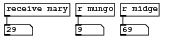
#N canvas 233 476 237 60 10; #X floatatom 4 31 5 0 0 0 - - -; #X floatatom 98 31 5 0 0 0 - - -; #X floatatom 157 31 5 0 0 0 - - -; #X obj 4 3 receive mary; #X obj 157 3 r midge; #X obj 98 3 r mungo; #X connect 3 0 0 0; #X connect 4 0 2 0; #X connect 5 0 1 0;
Download basics16.pd
Broadcast and special messages
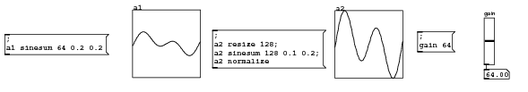
#N canvas 177 207 775 133 10; #N canvas 0 0 450 300 graph13 0; #X array a1 67 float 1; #A 0 -0.0586214 0 0.0586214 0.115555 0.169171 0.217958 0.260573 0.29589 0.323036 0.341421 0.350759 0.35107 0.342678 0.326197 0.302502 0.272694 0.238055 0.200001 0.160019 0.119621 0.0802746 0.0433551 0.0100909 -0.0184815 -0.0415546 -0.0585784 -0.0692782 -0.0736618 -0.0720147 -0.0648849 -0.0530575 -0.0375191 -0.0194151 -5.30718e-07 0.0194141 0.0375181 0.0530567 0.0648844 0.0720144 0.0736619 0.0692786 0.0585791 0.0415557 0.0184829 -0.0100892 -0.0433532 -0.0802726 -0.119619 -0.160017 -0.199998 -0.238054 -0.272692 -0.302501 -0.326196 -0.342678 -0.35107 -0.350759 -0.341422 -0.323037 -0.295891 -0.260575 -0.21796 -0.169174 -0.115558 -0.0586246 -3.18431e-06 0.0586183; #X coords 0 1 66 -1 100 100 1; #X restore 194 7 graph; #X msg 6 43 \; a1 sinesum 64 0.2 0.2; #X obj 712 21 vsl 15 64 0 127 0 0 empty gain gain 0 -8 1 8 -262144 -1 -1 3175 1; #X floatatom 712 95 5 0 0 0 - - -; #X msg 614 39 \; gain 64; #N canvas 0 0 450 300 graph13 0; #X array a2 131 float 1; #A 0 -0.0896305 0 0.0896305 0.178527 0.265964 0.351226 0.433621 0.512482 0.587174 0.657101 0.72171 0.780498 0.833014 0.878865 0.91772 0.949309 0.973432 0.989953 0.998808 1 0.993603 0.979759 0.958674 0.930622 0.895937 0.85501 0.80829 0.756271 0.699496 0.638546 0.574037 0.506611 0.436935 0.365689 0.293561 0.221244 0.149424 0.0787778 0.00996261 -0.0563869 -0.119666 -0.179307 -0.234781 -0.285606 -0.331352 -0.371642 -0.406157 -0.43464 -0.456895 -0.472793 -0.482271 -0.485331 -0.482042 -0.472537 -0.457014 -0.435732 -0.409009 -0.377218 -0.340784 -0.300178 -0.255915 -0.208545 -0.158652 -0.106843 -0.0537466 -2.91115e-06 0.0537408 0.106837 0.158646 0.20854 0.25591 0.300174 0.34078 0.377215 0.409006 0.43573 0.457012 0.472535 0.482041 0.485331 0.482272 0.472795 0.456897 0.434642 0.406161 0.371646 0.331357 0.285611 0.234786 0.179313 0.119673 0.0563939 -0.00995529 -0.0787702 -0.149417 -0.221236 -0.293553 -0.365681 -0.436928 -0.506604 -0.57403 -0.638539 -0.69949 -0.756265 -0.808284 -0.855006 -0.895933 -0.930619 -0.958672 -0.979757 -0.993602 -1 -0.998808 -0.989954 -0.973434 -0.949312 -0.917724 -0.87887 -0.833019 -0.780504 -0.721717 -0.657108 -0.587182 -0.51249 -0.43363 -0.351235 -0.265973 -0.178537 -0.0896401 -9.70382e-06 0.0896208; #X coords 0 1 130 -1 100 100 1; #X restore 492 8 graph; #X msg 312 37 \; a2 resize 128 \; a2 sinesum 128 0.1 0.2 \; a2 normalize ; #X connect 2 0 3 0;
Download basics26.pd
List packing
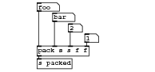
#N canvas 156 131 253 117 10; #X obj 59 75 pack s s f f; #X symbolatom 59 3 5 0 0 0 - - -; #X symbolatom 85 20 5 0 0 0 - - -; #X floatatom 111 38 3 0 0 0 - - -; #X floatatom 138 55 3 0 0 0 - - -; #X obj 59 96 s packed; #X connect 0 0 5 0; #X connect 1 0 0 0; #X connect 2 0 0 1; #X connect 3 0 0 2; #X connect 4 0 0 3;
Download basics20.pd
List unpacking
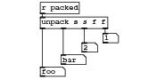
#N canvas 491 136 241 116 10; #X symbolatom 58 98 5 0 0 0 - - -; #X symbolatom 89 80 5 0 0 0 - - -; #X floatatom 120 62 3 0 0 0 - - -; #X floatatom 151 48 3 0 0 0 - - -; #X obj 58 2 r packed; #X obj 58 24 unpack s s f f; #X connect 4 0 5 0; #X connect 5 0 0 0; #X connect 5 1 1 0; #X connect 5 2 2 0; #X connect 5 3 3 0;
Download basics21.pd
Substitution (Dollar args in message boxes)
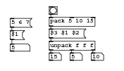
#N canvas 116 227 230 131 10; #X msg 18 46 \$1; #X floatatom 18 71 5 0 0 0 - - -; #X msg 18 23 5 6 7; #X msg 91 43 \$3 \$1 \$2; #X obj 91 21 pack 5 10 15; #X obj 91 66 unpack f f f; #X obj 91 1 bng 15 250 50 0 empty empty empty 0 -6 0 8 -262144 -1 -1 ; #X floatatom 91 88 3 0 0 0 - - -; #X floatatom 130 88 3 0 0 0 - - -; #X floatatom 170 88 3 0 0 0 - - -; #X connect 0 0 1 0; #X connect 2 0 0 0; #X connect 3 0 5 0; #X connect 4 0 3 0; #X connect 5 0 7 0; #X connect 5 1 8 0; #X connect 5 2 9 0; #X connect 6 0 4 0;
Download basics27.pd
Persistance (Storage in message boxes)
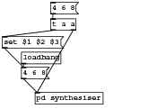
#N canvas 177 206 216 157 10; #X msg 30 95 4 6 8; #X msg 2 50 set \$1 \$2 \$3; #X obj 30 73 loadbang; #N canvas 0 0 450 300 synthesiser 0; #X obj 94 30 inlet; #X restore 50 132 pd synthesiser; #X obj 73 24 t a a; #X msg 73 0 4 6 8; #X connect 0 0 3 0; #X connect 1 0 0 0; #X connect 2 0 0 0; #X connect 4 0 1 0; #X connect 4 1 3 0; #X connect 5 0 4 0;
Download basics25.pd
List distribution (property of objects)
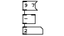
#N canvas 233 476 116 65 10; #X floatatom 41 49 5 0 0 0 - - -; #X obj 41 26 -; #X msg 41 1 9 7; #X connect 1 0 0 0; #X connect 2 0 1 0;
Download basics17.pd
MIDI in using [notein] object
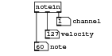
#N canvas 271 248 183 89 10; #X obj 56 0 notein; #X floatatom 56 66 3 0 0 1 note - -; #X floatatom 74 46 3 0 0 1 velocity - -; #X floatatom 93 25 3 0 0 1 channel - -; #X connect 0 0 1 0; #X connect 0 1 2 0; #X connect 0 2 3 0;
Download basics19.pd
Random MIDI note out using [noteout] object
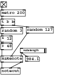
#N canvas 682 315 148 197 10; #X obj 1 147 makenote; #X obj 1 25 metro 200; #X obj 1 114 + 48; #X obj 1 72 random 3; #X obj 1 94 * 12; #X obj 1 49 t b b; #X obj 68 70 random 127; #X obj 55 127 hsl 64 12 0 1000 0 1 empty empty notelength 5 6 1 8 -262144 -1 -1 6200 1; #X floatatom 66 148 5 0 0 0 - - -; #X obj 1 3 tgl 15 0 empty empty empty 0 -6 0 8 -262144 -1 -1 1 1; #X obj 1 179 noteout; #X connect 0 0 10 0; #X connect 0 1 10 1; #X connect 1 0 5 0; #X connect 2 0 0 0; #X connect 3 0 4 0; #X connect 4 0 2 0; #X connect 5 0 3 0; #X connect 5 1 6 0; #X connect 6 0 0 1; #X connect 7 0 8 0; #X connect 7 0 0 2; #X connect 9 0 1 0;
Download midi-noteout.pd
Arithmetic mean on three numbers
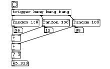
#N canvas 226 146 285 178 10; #X obj 29 46 random 100; #X obj 109 46 random 100; #X obj 189 46 random 100; #X obj 29 86 +; #X floatatom 35 66 3 0 0 0 - - -; #X floatatom 115 66 3 0 0 0 - - -; #X floatatom 195 66 3 0 0 0 - - -; #X obj 29 18 trigger bang bang bang; #X obj 29 109 +; #X obj 29 131 / 3; #X floatatom 29 154 6 0 0 0 - - -; #X obj 29 -2 bng 15 250 50 0 empty empty empty 0 -6 0 8 -262144 -1 -1; #X connect 0 0 3 0; #X connect 0 0 4 0; #X connect 1 0 3 1; #X connect 1 0 5 0; #X connect 2 0 6 0; #X connect 2 0 8 1; #X connect 3 0 8 0; #X connect 7 0 0 0; #X connect 7 1 1 0; #X connect 7 2 2 0; #X connect 8 0 9 0; #X connect 9 0 10 0; #X connect 11 0 7 0;
Download basics22.pd
Counter
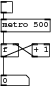
#N canvas 288 556 408 147 10; #X obj 100 41 metro 200; #X obj 100 16 tgl 15 0 empty empty empty 17 7 0 10 -262144 -1 -1 0 1; #X obj 100 72 f; #X obj 131 72 + 1; #X obj 100 111 print; #X msg 197 26 1; #X msg 196 48 -1; #X text 233 26 count up; #X text 234 47 count down; #X connect 0 0 2 0; #X connect 1 0 0 0; #X connect 2 0 3 0; #X connect 2 0 4 0; #X connect 3 0 2 1; #X connect 5 0 3 1; #X connect 6 0 3 1;
Download counter.pd
Constrained counter
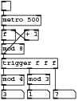
#N canvas 288 556 473 303 10; #X obj 100 41 metro 200; #X obj 100 16 tgl 15 0 empty empty empty 17 7 0 10 -262144 -1 -1 0 1; #X obj 100 72 f; #X obj 131 72 + 1; #X obj 100 192 print; #X msg 197 26 1; #X msg 196 48 -1; #X text 233 26 count up; #X text 234 47 count down; #X obj 111 100 mod 8; #X connect 0 0 2 0; #X connect 1 0 0 0; #X connect 2 0 4 0; #X connect 2 0 9 0; #X connect 3 0 2 1; #X connect 5 0 3 1; #X connect 6 0 3 1; #X connect 9 0 3 0;
Download constrained-counter.pd
Accumulator
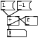
#N canvas 288 556 473 303 10; #X obj 100 41 metro 200; #X obj 100 16 tgl 15 0 empty empty empty 17 7 0 10 -262144 -1 -1 0 1; #X obj 133 146 f; #X obj 100 226 print; #X msg 265 53 1; #X msg 264 75 -1; #X text 301 53 count up; #X text 302 74 count down; #X obj 100 146 +; #X obj 100 107 f 1; #X msg 264 30 2; #X msg 264 97 -2; #X text 259 2 accumulate step; #X connect 0 0 9 0; #X connect 1 0 0 0; #X connect 2 0 8 1; #X connect 4 0 9 1; #X connect 5 0 9 1; #X connect 8 0 2 0; #X connect 8 0 3 0; #X connect 9 0 8 0; #X connect 10 0 9 1; #X connect 11 0 9 1;
Download accumulator.pd
Scaling
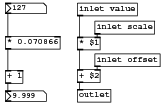
#N canvas 403 566 212 135 10; #X obj 100 2 inlet value; #X obj 123 26 inlet scale; #X obj 123 69 inlet offset; #X obj 100 116 outlet; #X obj 5 2 nbx 5 14 -1e+37 1e+37 0 0 empty empty empty 0 -6 0 10 -262144 -1 -1 127 256; #X obj 5 118 nbx 5 14 -1e+37 1e+37 0 0 empty empty empty 0 -6 0 10 -262144 -1 -1 9.99998 256; #X obj 5 91 + 1; #X obj 5 46 * 0.070866; #X obj 100 47 * \$1; #X obj 100 90 + \$2; #X connect 0 0 8 0; #X connect 1 0 8 1; #X connect 2 0 9 1; #X connect 4 0 7 0; #X connect 6 0 5 0; #X connect 7 0 6 0; #X connect 8 0 9 0; #X connect 9 0 3 0;
Download scale.pd
Looping with [until]
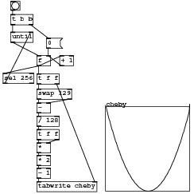
#N canvas 83 115 320 317 10; #X obj 17 14 t b b; #X obj 60 82 f; #X obj 98 82 + 1; #X msg 76 53 0; #X obj 17 43 until; #X obj 60 112 t f f; #N canvas 0 0 450 300 graph1 0; #X array cheby 256 float 1; #A 0 1.03137 1 0.968872 0.937988 0.907349 0.876953 0.846802 0.816895 0.787231 0.757812 0.728638 0.699707 0.671021 0.642578 0.61438 0.586426 0.558716 0.53125 0.504028 0.477051 0.450317 0.423828 0.397583 0.371582 0.345825 0.320312 0.295044 0.27002 0.245239 0.220703 0.196411 0.172363 0.14856 0.125 0.101685 0.0786133 0.0557861 0.0332031 0.0108643 -0.0112305 -0.0330811 -0.0546875 -0.0760498 -0.097168 -0.118042 -0.138672 -0.159058 -0.179199 -0.199097 -0.21875 -0.238159 -0.257324 -0.276245 -0.294922 -0.313354 -0.331543 -0.349487 -0.367188 -0.384644 -0.401855 -0.418823 -0.435547 -0.452026 -0.468262 -0.484253 -0.5 -0.515503 -0.530762 -0.545776 -0.560547 -0.575073 -0.589355 -0.603394 -0.617188 -0.630737 -0.644043 -0.657104 -0.669922 -0.682495 -0.694824 -0.706909 -0.71875 -0.730347 -0.741699 -0.752808 -0.763672 -0.774292 -0.784668 -0.7948 -0.804688 -0.814331 -0.82373 -0.832886 -0.841797 -0.850464 -0.858887 -0.867065 -0.875 -0.88269 -0.890137 -0.897339 -0.904297 -0.911011 -0.91748 -0.923706 -0.929688 -0.935425 -0.940918 -0.946167 -0.951172 -0.955933 -0.960449 -0.964722 -0.96875 -0.972534 -0.976074 -0.97937 -0.982422 -0.985229 -0.987793 -0.990112 -0.992188 -0.994019 -0.995605 -0.996948 -0.998047 -0.998901 -0.999512 -0.999878 -1 -0.999878 -0.999512 -0.998901 -0.998047 -0.996948 -0.995605 -0.994019 -0.992188 -0.990112 -0.987793 -0.985229 -0.982422 -0.97937 -0.976074 -0.972534 -0.96875 -0.964722 -0.960449 -0.955933 -0.951172 -0.946167 -0.940918 -0.935425 -0.929688 -0.923706 -0.91748 -0.911011 -0.904297 -0.897339 -0.890137 -0.88269 -0.875 -0.867065 -0.858887 -0.850464 -0.841797 -0.832886 -0.82373 -0.814331 -0.804688 -0.7948 -0.784668 -0.774292 -0.763672 -0.752808 -0.741699 -0.730347 -0.71875 -0.706909 -0.694824 -0.682495 -0.669922 -0.657104 -0.644043 -0.630737 -0.617188 -0.603394 -0.589355 -0.575073 -0.560547 -0.545776 -0.530762 -0.515503 -0.5 -0.484253 -0.468262 -0.452026 -0.435547 -0.418823 -0.401855 -0.384644 -0.367188 -0.349487 -0.331543 -0.313354 -0.294922 -0.276245 -0.257324 -0.238159 -0.21875 -0.199097 -0.179199 -0.159058 -0.138672 -0.118042 -0.097168 -0.0760498 -0.0546875 -0.0330811 -0.0112305 0.0108643 0.0332031 0.0557861 0.0786133 0.101685 0.125 0.14856 0.172363 0.196411 0.220703 0.245239 0.27002 0.295044 0.320312 0.345825 0.371582 0.397583 0.423828 0.450317 0.477051 0.504028 0.53125 0.558716 0.586426 0.61438 0.642578 0.671021 0.699707 0.728638 0.757812 0.787231 0.816895 0.846802 0.876953 0.907349 1.06299; #X coords 0 1 255 -1 140 140 1; #X restore 174 166 graph; #X obj 60 290 tabwrite cheby; #X obj 17 -8 bng 15 250 50 0 empty empty empty 0 -6 0 8 -262144 -1 -1; #X obj 60 137 swap 129; #X obj 60 160 -; #X obj 60 182 / 128; #X obj 60 204 t f f; #X obj 60 226 *; #X obj 60 247 * 2; #X obj 60 268 - 1; #X obj 4 111 sel 256; #X connect 0 0 4 0; #X connect 0 1 3 0; #X connect 1 0 2 0; #X connect 1 0 5 0; #X connect 1 0 16 0; #X connect 2 0 1 1; #X connect 3 0 1 1; #X connect 4 0 1 0; #X connect 5 0 9 0; #X connect 5 1 7 1; #X connect 8 0 0 0; #X connect 9 0 10 0; #X connect 9 1 10 1; #X connect 10 0 11 0; #X connect 11 0 12 0; #X connect 12 0 13 0; #X connect 12 1 13 1; #X connect 13 0 14 0; #X connect 14 0 15 0; #X connect 15 0 7 0; #X connect 16 0 4 1;
Download chebyshev-until.pd
For loop construct (fixed iterations)
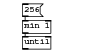
#N canvas 0 0 131 69 10; #X obj 29 25 min 1; #X obj 29 46 until; #X msg 29 3 256; #X connect 0 0 1 0; #X connect 2 0 0 0;
Download basics28.pd
Message complement and inverse
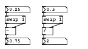
#N canvas 720 452 189 106 10; #X obj 10 29 swap 1; #X obj 10 54 -; #X obj 10 8 nbx 5 14 -1e+37 1e+37 0 0 empty empty empty 0 -6 0 10 -262144 -1 -1 0.25 256; #X obj 10 78 nbx 5 14 -1e+37 1e+37 0 0 empty empty empty 0 -6 0 10 -262144 -1 -1 0.75 256; #X obj 91 29 swap 1; #X obj 91 8 nbx 5 14 -1e+37 1e+37 0 0 empty empty empty 0 -6 0 10 -262144 -1 -1 0.5 256; #X obj 91 78 nbx 5 14 -1e+37 1e+37 0 0 empty empty empty 0 -6 0 10 -262144 -1 -1 2 256; #X obj 91 54 /; #X connect 0 0 1 0; #X connect 0 1 1 1; #X connect 1 0 3 0; #X connect 2 0 0 0; #X connect 4 0 7 0; #X connect 4 1 7 1; #X connect 5 0 4 0; #X connect 7 0 6 0;
Download message-reciprocal-inverse.pd
Weighted random numbers
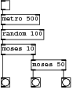
#N canvas 288 556 376 201 10; #X obj 100 16 tgl 15 0 empty empty empty 17 7 0 10 -262144 -1 -1 0 1; #X obj 100 41 metro 500; #X obj 100 66 random 100; #X obj 100 95 moses 10; #X obj 206 159 bng 15 250 50 0 empty empty empty 17 7 0 10 -262144 -1 -1; #X obj 153 118 moses 50; #X obj 153 160 bng 15 250 50 0 empty empty empty 17 7 0 10 -262144 -1 -1; #X obj 100 159 bng 15 250 50 0 empty empty empty 17 7 0 10 -262144 -1 -1; #X connect 0 0 1 0; #X connect 1 0 2 0; #X connect 2 0 3 0; #X connect 3 0 7 0; #X connect 3 1 5 0; #X connect 5 0 6 0; #X connect 5 1 4 0;
Download weighted-random.pd
Delay cascade
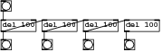
#N canvas 288 556 376 201 10; #X obj 209 90 bng 15 250 50 0 empty empty empty 17 7 0 10 -262144 -1 -1; #X obj 149 91 bng 15 250 50 0 empty empty empty 17 7 0 10 -262144 -1 -1; #X obj 86 90 bng 15 250 50 0 empty empty empty 17 7 0 10 -262144 -1 -1; #X obj 86 22 bng 15 250 50 0 empty empty empty 17 7 0 10 -262144 -1 -1; #X obj 86 59 del 100; #X obj 149 59 del 100; #X obj 209 59 del 100; #X connect 3 0 4 0; #X connect 4 0 5 0; #X connect 4 0 2 0; #X connect 5 0 6 0; #X connect 5 0 1 0; #X connect 6 0 0 0;
Download delay-cascade.pd
Last number (running average example)
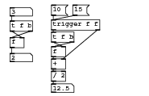
#N canvas 177 190 241 153 10; #X obj 15 32 t f b; #X obj 15 59 f; #X floatatom 15 10 5 0 0 0 - - -; #X floatatom 15 85 5 0 0 0 - - -; #X obj 83 50 t f b; #X obj 83 74 f; #X floatatom 83 135 5 0 0 0 - - -; #X obj 83 94 +; #X obj 83 114 / 2; #X obj 83 30 trigger f f; #X msg 83 6 10; #X msg 118 6 15; #X connect 0 0 1 1; #X connect 0 1 1 0; #X connect 1 0 3 0; #X connect 2 0 0 0; #X connect 4 0 5 1; #X connect 4 1 5 0; #X connect 5 0 7 0; #X connect 7 0 8 0; #X connect 8 0 6 0; #X connect 9 0 4 0; #X connect 9 1 7 1; #X connect 10 0 9 0; #X connect 11 0 9 0;
Download last-average.pd
Running maximum or minimum
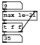
#N canvas 310 189 71 81 10; #X obj 3 42 t f f; #X floatatom 3 2 5 0 0 0 - - -; #X obj 3 20 max 1e-21; #X floatatom 3 64 5 0 0 0 - - -; #X connect 0 0 3 0; #X connect 0 1 2 1; #X connect 1 0 2 0; #X connect 2 0 0 0;
Download running-max.pd
Float lowpass filter
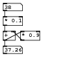
#N canvas 401 263 114 115 10; #X floatatom 5 5 5 0 0 0 - - -; #X obj 5 30 * 0.1; #X obj 5 58 +; #X obj 38 58 * 0.9; #X floatatom 5 86 5 0 0 0 - - -; #X connect 0 0 1 0; #X connect 1 0 2 0; #X connect 2 0 3 0; #X connect 2 0 4 0; #X connect 3 0 2 1;
Download message-lowpass.pd
- Index
- Chapters 9 to 14
- Introductory Pure Data
- 9: Starting with Pure Data
- 10: Using Pure Data
- 11: Pure Data Audio
- 12: Abstraction
- 13: Shaping Sound
- 14: Pure Data Essentials
- Chapters 17 to 21
- Techniques
- 17: Summation
- 18: Tables
- 19: Non-linear
- 20: Modulation
- 21: Granular Methods
- Practical Series 1
- Artificial Sounds
- 1: Pedestrian Crossing
- 2: Telephone Siganlling Tones
- 3: DTMF Dialling Tones
- 4: Alarm and Menu Sounds
- 5: Police Siren
- Practical Series 2
- Idiophonics
- 6: Telephone Bell
- 7: Bouncing Ball
- 8: Rolling Tin Can
- 9: Creaking Door
- 10: Boingy Sound
- Practical Series 3
- Nature
- 11: Fire
- 12: Bubbles
- 13: Running Water
- 14: Pouring
- 15: Rain
- 16: Electricity
- 17: Thunder
- 18: Wind
- Practical Series 4
- Machines
- 19: Switches
- 20: Clocks
- 21: Motors
- 22: Cars
- 23: Fans
- 24: Jet Engine
- 25: Helicopter
- Practical Series 5
- Practical Series 6
- Project Mayhem
- 30: Guns
- 31: Explosions
- 32: Rocket Launcher
- Practical Series 7
- Science Fiction
- 33: Transporter
- 34: R2D2
- 35: Red Alert